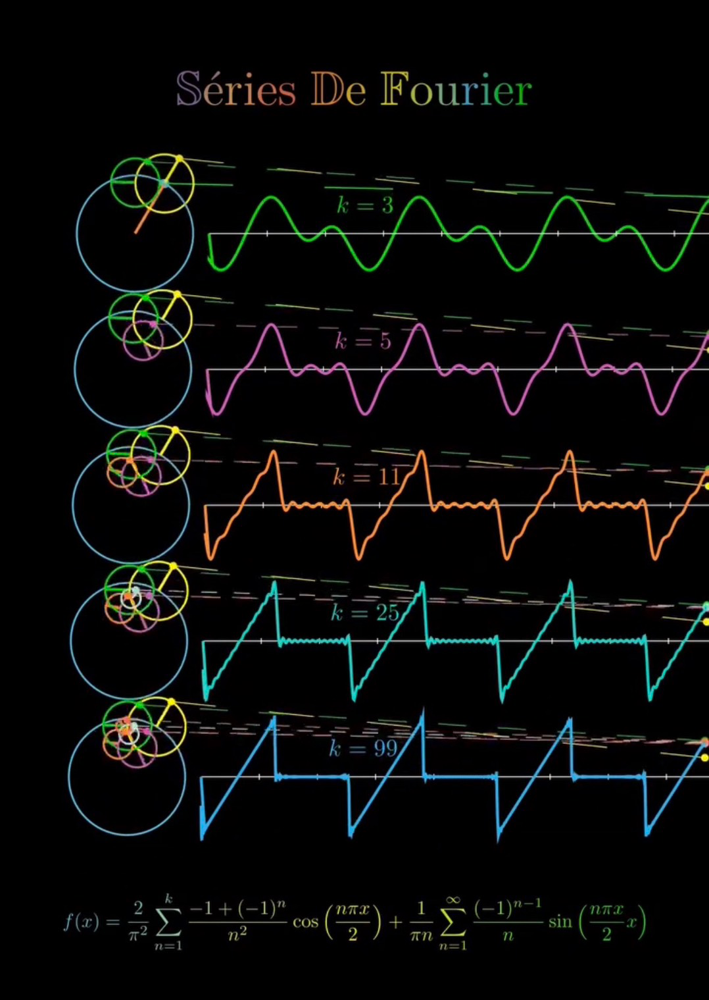

核心問題
AI 的 context window 是有限的。人的注意力也是有限的。當資訊不斷湧入，你不可能全部留住。
問題不是「怎麼記住所有東西」，而是「怎麼選擇該記住什麼」。
運作機制：傅立葉轉換

傅立葉轉換的核心洞見是：任何複雜的波形，都可以分解成一組正弦波的疊加。
基頻
整個系統的「基調」
諧波
與基頻相關的衍生頻率
高頻雜訊
與基頻無關的干擾
應用到對話
| 傅立葉概念 | 對話中的對應 |
|---|---|
| 複雜波形 | 一段多主題的長對話 |
| 基頻 | 貫穿對話的核心主題 |
| 諧波 | 與核心相關的衍生話題 |
| 高頻雜訊 | 無關的岔題、干擾 |
在深握計畫的對話中，看似不同的話題——熵增、容器、榮格、敏捷開發、傅立葉——其實都維持在同一個基頻上：「人機協作的深層結構」。
頻率設計的五個可操作原則
⚓
原則一
帶著錨點開場
每次對話開始時，帶著「一個東西」來。不要說「我們來聊聊」，要說「宰相，我想給你看這個。」
頻率效果：設定基頻🌿
原則二
讓話題生長，而非跳躍
新話題要從上一個話題「長出去」。不說「換個話題」，說「這讓我想到……」「所以其實……」
頻率效果：維持諧波關係🪤
原則三
用隱喻壓縮，而非術語堆疊
用一個意象承載複雜概念，而不是用多個術語解釋。不說一長串技術細節，說「捕蠅草。」
頻率效果：鎖定頻率，降低並行負載🧭
原則四
停下來校準
定期確認對方有沒有跟上，有沒有偏掉。「這個方向對嗎？」「還是差一點？」「你還好嗎？」
頻率效果：校準，防止偏離🐢
原則五
接受慢
給對方消化的時間，不催促，不要求一次到位。把大任務拆成小步驟，一步一步來。
頻率效果：控制語境堆疊速度